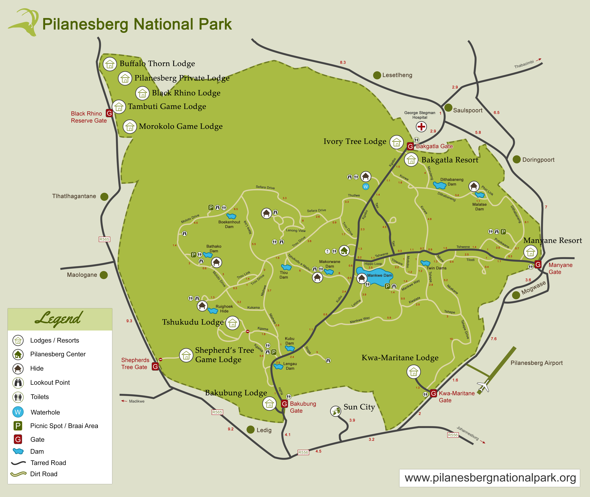

-
 Follow us on Instagram!
Follow us on Instagram! -
 Follow us on Facebook!
Follow us on Facebook! -
 Follow us on Twitter!
Follow us on Twitter! -
 Reserve your trip on TripAdvisor!
Reserve your trip on TripAdvisor!
Our map of Pilanesberg National Park will give you an overview of where each Lodge or Resort is located in the park. It is a good idea to have a rough route planned on where you would like to go in the park and the roads you need to use to get there before setting off on game drives. Please note that only a few main roads are tarred in the park, while the rest are gravel roads. Using the map will help you plan your route for the day and get you to the exit gates before the park closes in the evening. Other areas of interest to stop at during your journey include hides, lookout points, waterholes, picnic areas and dams.
 Follow us on Instagram! Follow us on Facebook! Follow us on Twitter! Reserve your trip on TripAdvisor!